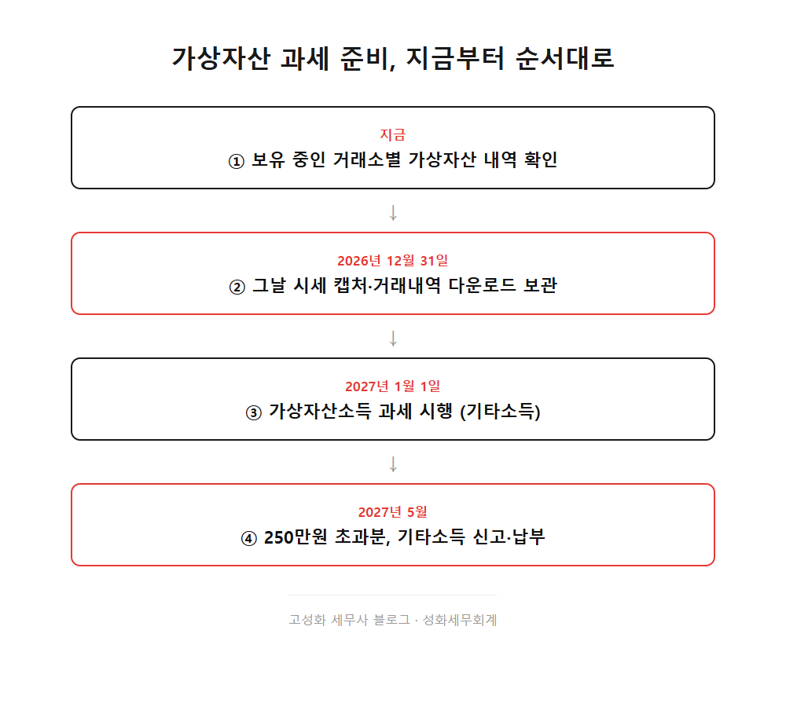
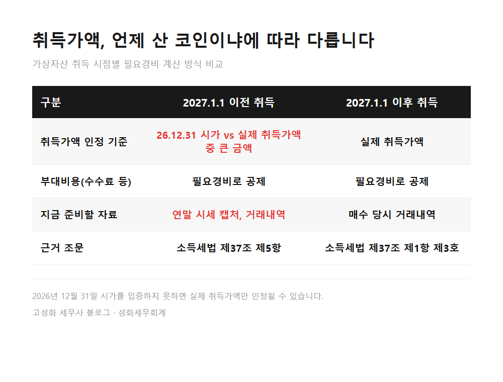
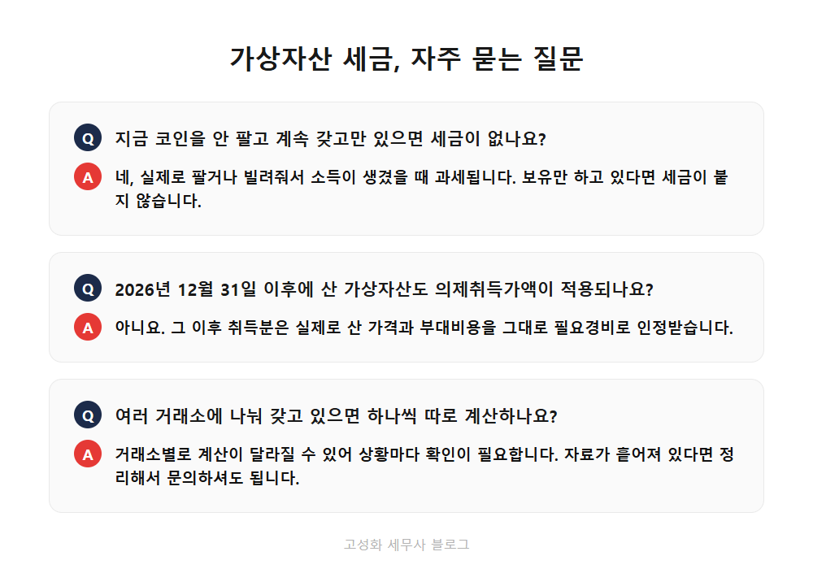

가상자산 취득가액 2026년 12월31일 시가 적용

지난달부터 사무실에 가상자산 세금을 묻는 전화가 부쩍 늘었습니다. 저희는 종합소득세와 법인 기장, 양도소득세까지 폭넓게 상담을 맡아오면서, 세법이 새로 바뀔 때는 기사나 다른 블로그보다 법령 원문을 먼저 확인하고 안내드리는 걸 원칙으로 삼고 있습니다. (사실 이런 새 제도는 저도 조문을 몇 번씩 다시 찾아봅니다.) 오늘은 2027년부터 시작되는 가상자산 과세 중에서, 올해가 가기 전에 챙겨야 할 부분을 정리해 드리겠습니다.
2027년 1월 1일부터 코인이나 이더리움 같은 가상자산을 팔거나 빌려주고 얻은 소득에 세금이 붙습니다. 이 글을 보고 계신 분은 아마 ① 2020년 전후부터 코인을 사서 지금까지 들고 계신 분 ② 최근 관련 뉴스를 보고 내 코인도 대상인지 궁금해진 분 ③ 세금이 붙는다는 건 알지만 뭘 준비해야 할지 감이 안 잡히는 분, 이 셋 중 하나이실 겁니다. 미리 말씀드리면 올해 안에 딱 한 가지만 챙기면 됩니다. 지금 갖고 계신 가상자산의 연말 시세를 기록해두는 일입니다. 왜 그런지 순서대로 설명드리겠습니다.
- 가상자산 소득은 어떤 세금으로 분류되나요
- 12월 31일 시가를 지금 챙겨야 하는 이유
한눈에 보기



자주 묻는 질문
지금 코인을 안 팔고 계속 갖고만 있으면 세금이 없나요?
네, 가상자산소득은 실제로 팔거나 빌려줘서 소득이 발생했을 때 과세됩니다. 보유만 하고 있다면 세금이 붙지 않습니다.
2026년 12월 31일 이후에 산 가상자산은 어떻게 계산하나요?
그 이후에 산 것은 의제취득가액 규정이 적용되지 않고, 실제로 산 가격과 부대비용을 그대로 필요경비로 인정받습니다.
여러 거래소에 나눠서 갖고 있는데 하나씩 따로 계산하나요?
거래소별로 계산이 달라질 수 있어 상황마다 확인이 필요한 부분입니다. 자료가 흩어져 있다면 한 번 정리해서 가져오셔도 됩니다.
정리하면
정리하자면 가상자산소득은 기타소득으로 과세되고, 연 250만원까지는 세금이 없습니다. 그리고 지금 갖고 계신 자산이라면 2026년 12월 31일 시가가 취득가액을 정하는 중요한 기준선이 됩니다. 이 시가를 입증할 자료를 남겨두는 게 올해 안에 해야 할 가장 실질적인 준비입니다.
상담료가 얼마인지 몰라 망설이시는 분들이 많은데, 이 정도 확인은 짧은 통화로도 가능합니다. 갖고 계신 가상자산 내역과 취득 시기만 정리해서 문의 주시면, 지금 어떤 자료를 남겨둬야 할지부터 같이 봐드리겠습니다.
본문 전체와 근거 조문은 블로그에서 확인하실 수 있습니다.